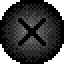
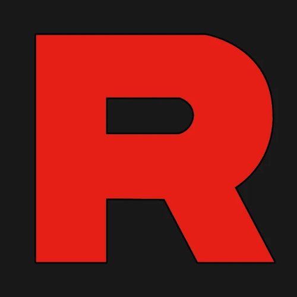

----- Qui sommes-nous ? -----
_________________________

Estorc :
"Je suis un simple homme comme vous et moi, j'aime créer des choses et avant tout partager. Je crée des jeux vidéos et dessine dans mon temps libre,
j'aime jouer aux jeux vidéos et bah je suis l'un des fondateur de la N.A.G. Corporation."
_________________________

Max :
"Je m'appelle Max. Je suis le fondateur de la N.A.G. au sens strict du terme et le co-fondateur de la chaîne. Je suis ce que l'on pourrait appeler l'expert du pôle recherche et développement dans le background de la N.A.G. Spécialiste des armes en tout genre, je suis également un maître Pokémon dans ma catégorie à savoir GBA SP. ^^ J'ai un sens de l'humour très provocateur et j'aime exploser Estorc dans un maximum de domaine. 😛"
----- Pourquoi N.A.G. ? -----
_________________________
Réponse de Estorc :
"N.A.G est un acronyme signifiant à l'origine le nom d'une organisation secrète fictive inventé par Max. Nous avons repris ce nom pour notre chaîne, mais celle-ci n'a pas vraiment de rapport avec cette dernière. Cependant, certains éléments de la chaîne, comme le personnage du patron, sont inspiré de "l'atmosphère" de cette organisation.
Le sens de l'acronyme n'est volontairement pas dévoilé pour vous permettre de tenter de la deviner. Vous obtiendrez des indices en live ^^"
_________________________
"Le patron est un personnage Role Play venant a faire croire aux viewers que la N.A.G. est une organisation dirigé par le patron, aussi appelé "F.". À l'origine, le patron était censé être le seul et unique personnage de la chaîne, s'appelant antérieurement "Le pokéscientifique". Cette idée aura été abandonné dés la création de la N.A.G."